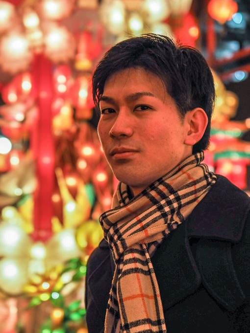

CV
- Name
- Yoshiyasu ICHIKAWA
- Degree
- Ph.D. in Engineering
- Affiliation
- Graduate School of Science and Technology, Keio University
- Nationality
- Japanese
- Research interests
- Thermofluid engineering (Flow measurement, Flow control)
Education
-
2011.03
B.S. in Engineering
Department of Mechanical Engineering, Tokyo University of Science -
2013.03
M.S. in Engineering
Department of Mechanical Engineering, Tokyo University of Science -
2017.09
Ph.D. in Engineering
Department of Mechanical Engineering, Tokyo University of Science

Research Experience
-
2016.04–2017.09
Research Fellow (DC2)
Japan Society for the Promotion of Science (JSPS) -
2017.10–2018.03
Postdoctoral Research Fellow (PD)
Japan Society for the Promotion of Science (JSPS) -
2018.04–2021.03
Aerospace Project Research Associate
Aviation Technology Directorate, Japan Aerospace Exploration Agency (JAXA) -
2021.04–2026.03
Assistant Professor
Department of Mechanical Engineering, Tokyo University of Science -
2024.10–2025.03
Visiting Scholar
Waterloo Institute for Nanotechnology, University of Waterloo -
2026.04–Present
Project Assistant Professor
Graduate School of Science and Technology, Keio University